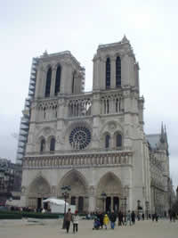

600 ANS D'HISTOIRE
 Notre-Dame de Paris
Notre-Dame de Paris
600 ANS D'HISTOIRE
|
|
Bonjour à tous !
|
Parisienne
de pure souche et fondue d'Histoire,
j'ai décidé de consacrer ma page perso à notre chère cathédrale trônant depuis des siècles au cœur de la capitale française. Et parce qu'histoire ne rime pas toujours avec ennui et chronologie, je vous propose d'observer le monument à travers l'œil de ses bâtisseurs, des alchimistes du Moyen Âge et des cinéastes de notre temps. |
 |
Mais
ce n'est pas tout !
Pour
les plus curieux d'entre vous, j'ai ajouté mon parcours et mes liens
favoris ! Bonne visite et à bientôt Julie